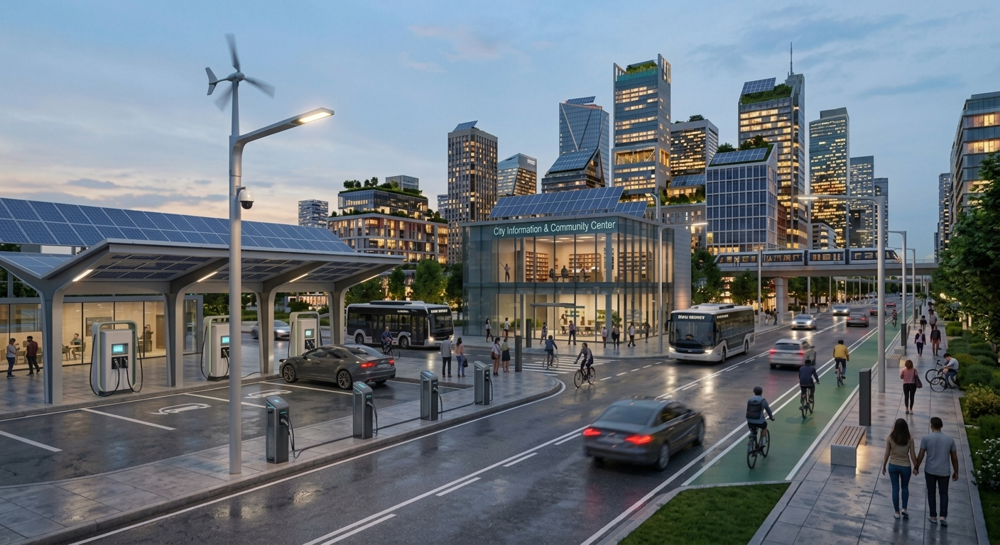

Smart Energy

Smart energy systems use digital technologies to manage energy production, distribution and consumption more efficiently. They support renewable energy, reduce waste and help cities build a cleaner and more reliable energy network.
Key Features
- Smart grids
- Solar and renewable energy
- Energy monitoring
- Smart meters
- Energy-efficient buildings